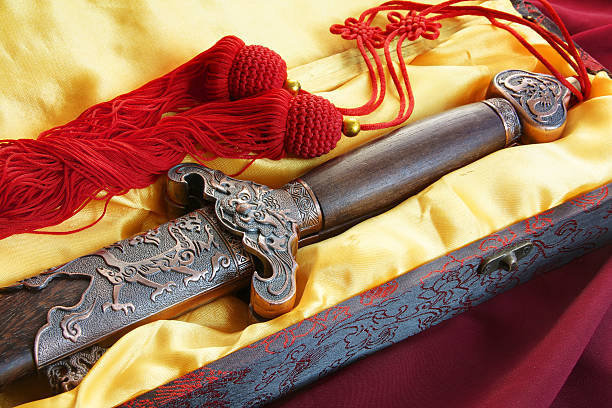
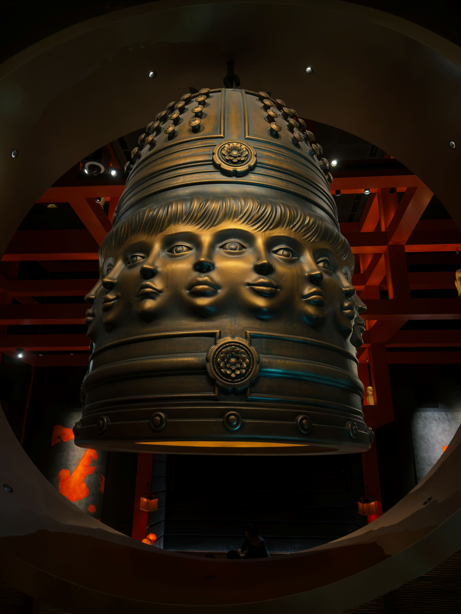
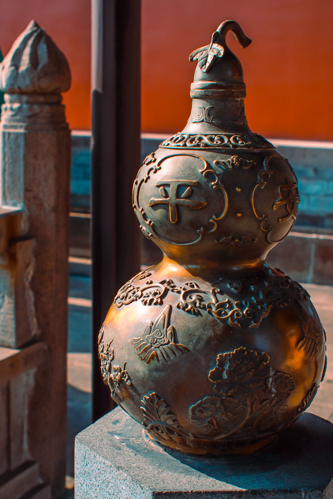
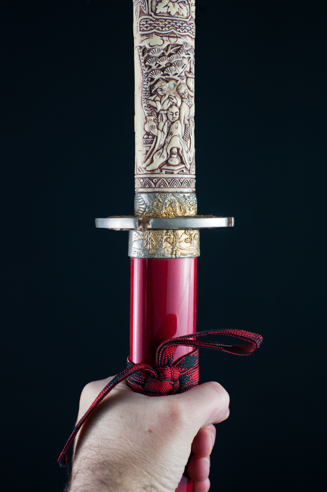
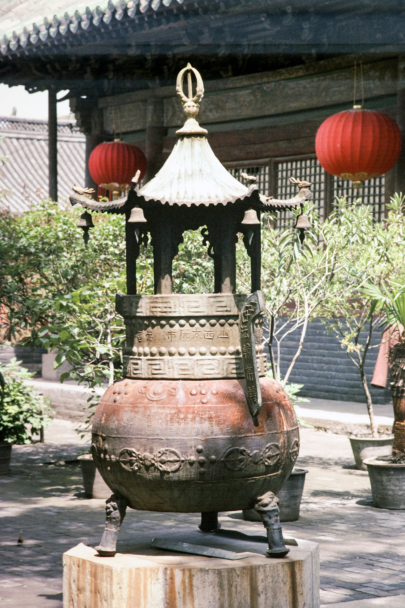

1. Evolución de los Tesoros a lo Largo de los Planos y la Trama
En Emperor's Domination, los tesoros no son simples objetos de combate: funcionan como ejes narrativos que desencadenan guerras entre sectas, disputas de linaje y confrontaciones entre épocas. A medida que Li Qiye avanza desde los mundos inferiores hasta el plano supremo del Reino Cielo, la jerarquía de las armas y reliquias se transforma radicalmente:
- Armas de Emperador Inmortal y Tesoros de Vida (Nueve Mundos y Décimo Mundo): Forjadas por los Emperadores Inmortales con materiales celestiales únicos y templadas bajo la Voluntad del Cielo, estas armas poseen espíritu propio y leyes imperiales capaces de borrar continentes enteros. En los inicios de la trama, cuando Li Qiye recupera su cuerpo humano en la Secta Antigua del Incienso Purificador, muchas grandes sectas confían ciegamente en sus Armas Imperiales ancestrales para intimidar a los demás; sin embargo, Li Qiye —quien en su etapa como el Cuervo Oscuro instruyó a varios de esos mismos emperadores— conoce sus debilidades y secretos de forja. Paralelamente, todo cultivador refina sus propios Tesoros de Vida dentro de sus Palacios del Destino, creciendo al ritmo de su fundación.
- Tesoros Primordiales y Reliquias de los Tres Inmortales: Al ascender al escenario del Mundo de los Tres Inmortales (dividido en los linajes Miríada, Imperial e Inmortal), aparecen artefactos nacidos de manera natural durante el origen de las eras o custodiados en ruinas celestiales y en las Seis Tierras de Redención. Su poder no proviene solo de la energía espiritual acumulada, sino de leyes de Dao puras inscritas en su núcleo desde épocas remotas, capaces de chocar directamente contra herencias imperiales completas.
- Artefactos del Árbol Primordial y Frutos del Dao (Ocho Desolados): Tras la devastadora Batalla en el Mundo Muerto que destruye la estructura de los Nueve Mundos y da nacimiento a los Ocho Desolados, el sistema de poder gira alrededor del Árbol Primordial y de los Frutos del Dao. En regiones como el Continente de la Espada o la Frontera Celestial, las armas y reliquias más codiciadas absorben la esencia de las raíces primordiales y permiten a los reyes y espadachines canalizar el peso de un Fruto del Dao en cada golpe.
- Tesoros de la Corte Celestial, Señores Dragón y Conquistadores (Seis Continentes): Después del colapso del Décimo Mundo y el surgimiento de los Seis Continentes, estalla el conflicto histórico entre La Raza (vinculada a la Corte Celestial y a los tres linajes antiguos: Cielo, Divino y Diablo) y La Gente (las Cien Razas). En esta etapa, las armas de los Conquistadores, los Señores del Dao y los Señores Dragón sostienen campañas continentales enteras, hasta que la caída de la Corte Celestial y la eliminación de los Señores Oscuros ocultos en ella abren una nueva era dorada para los clanes.
- Reliquias de Época y Tesoros del Reino Cielo (Tramo Final): En el plano superior —que comprende territorios como Estigio, Ruina, el Mundo Antiguo, el Firmamento Divino y Amanecer de la Época—, incluso los tesoros de emperadores ordinarios quedan completamente superados. Aquí se libran las guerras entre la Alianza Contra el Cielo (liderada por Anran), la Alianza Protectora del Mundo (encabezada por Min Ren) y la Alianza Devoradora, empleando reliquias ligadas al Verdadero Yo y armas forjadas en épocas previas para enfrentar el orden del Alto Cielo.


2. Artefactos, Sistemas Internos y Herencias Emblemáticas de Li Qiye
Un rasgo distintivo de Li Qiye a lo largo de toda la novela es que nunca se convierte en esclavo de un arma externa. Durante millones de años como el Cuervo Oscuro recorrió los lugares más peligrosos del universo —como los Doce Cementerios Prohibidos y las Seis Tierras Ancestrales—, acumulando tesoros que luego utilizó como herramientas desechables, ofrendas para abrir tumbas antiguas o regalos para fortalecer a sus discípulos y aliados:
- Los Trece Palacios del Destino y el Mar de la Memoria: Mientras el límite tradicional de cualquier genio o Emperador Inmortal en los mundos inferiores es abrir nueve o doce Palacios del Destino, Li Qiye rompe las leyes establecidas al abrir trece Palacios del Destino y fusionarlos en un sistema supremo. Este fundamento se sostiene sobre el inmenso océano de escrituras, leyes y recuerdos milenarios que logró preservar a través de las eras gracias al sacrificio y resguardo de figuras leales como el Rey Dragón Negro y el Emperador Inmortal Min Ren.
- Los Doce Físicos Inmortales y las Escrituras Supremos: A lo largo de la historia, Li Qiye cultiva y perfecciona los Físicos Inmortales más temidos del universo —entre ellos el Físico del Dios de la Muerte, el Físico Inmortal del Sol y el Físico del Cielo Supremo—. Al llevarlos a la perfección absoluta, su propio cuerpo físico adquiere mayor dureza y poder destructivo que las Armas de Emperador Inmortal, permitiéndole recibir impactos celestiales a mano limpia.
- El Caldero de Alquimia y las Píldoras que Desafían el Ciclo: Como Maestro Alquimista sin igual, Li Qiye domina fórmulas perdidas de épocas anteriores capaces de sanar fundamentos destruidos, purificar líneas de sangre impuras y romper cuellos de botella imposibles. En momentos críticos de la trama, sus píldoras y calderos ancestrales permiten que compañeras como Li Shuangyan, Chen Baojiao y Bai Jianzhen sobrevivan a sellos mortales y asciendan a planos superiores donde pocos cultivadores de los Nueve Mundos logran llegar.
- Calabazas Espirituales, Talismanes y Sellos de Contención: En diversas incursiones a tierras prohibidas y ruinas de épocas remotas, Li Qiye utiliza calabazas espirituales antiguas, talismanes de bronce y sellos de época para absorber energías caóticas, refinar esencias primordiales o encerrar entidades malignas que dormían bajo la tierra desde la Época de la Trinidad.
- El Camino de la Espada y las Reliquias del Filo Eterno: Desde las espadas arcaicas que empuña en los Nueve Mundos y su paso por el Continente de la Espada (donde instruye a figuras como Shuangjian en el verdadero Corazón de Dao) hasta las confrontaciones finales en el Reino Cielo, Li Qiye demuestra que una simple rama o una espada común en manos de una voluntad invencible puede partir armas divinas.



3. Artes Ancestrales y Leyes de Mérito hacia el Desenlace
En la recta final de Emperor's Domination, cuando las batallas involucran a existencias antiguas como Zhan Xian, Zhen Yu y Magu, las técnicas elementales convencionales pierden sentido y dan paso a las leyes fundamentales que rigen la existencia:
- Leyes de Mérito de Épocas Previas: Recopiladas por el Cuervo Oscuro en las Doce Tierras de Entierro Prohibidas y en zonas extremas donde ni los Emperadores Inmortales se atrevían a poner un pie, estas escrituras conservan la sabiduría de civilizaciones desaparecidas de épocas anteriores y permiten trascender las limitaciones impuestas por la Voluntad del Cielo.
- El Camino del Verdadero Yo y el Fruto del Dao: Tras el cambio de época en los Tres Inmortales (abarcando el Mundo del Pecado, el Cielo de Vida y Muerte y el Cielo Supremo) y el ascenso definitivo al Reino Cielo, el poder deja de depender de préstamos externos. Cada cultivador debe consolidar su propio Verdadero Yo y su Fruto del Dao para resistir la presión de los inmortales primordiales.
- Formaciones de Batalla y Sellos de Época: Durante los choques masivos entre las grandes coaliciones del Reino Cielo, se despliegan formaciones antiguas capaces de alterar el espacio-tiempo de regiones enteras, contener calamidades cósmicas y sostener el avance del plan de millones de años de Li Qiye hasta la confrontación definitiva con el Alto Cielo.

🎵 Música Ambiental del Dao:
Referencias bibliográficas de esta sección:
- [1] Yan Bi Xiao Sheng, 2014. Emperor's Domination: Philosophy of the Dao.
- [2] WuxiaWorld Editorial, 2020. The Nine Worlds and Cultivation Systems in Chinese Fantasy.